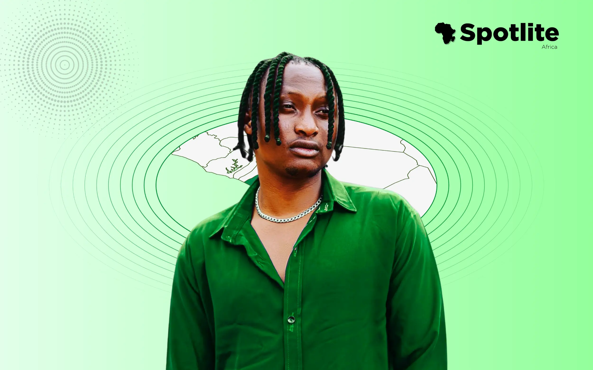

SEAKING: Seaking the Truth, The Man Who Unchained Justice with His Voice
They say the pen is mightier than the sword. But in an era where attention is currency and algorithms dictate reality, it takes more than ink and paper to break the chains of injustice — it takes fire. And in Nigeria today, that fire has a name: Seaking.
Now, don’t let the poetic moniker fool you. This isn’t some faceless figure hiding behind hashtags or a keyboard warrior playing social savior on Saturdays. No, Seaking — also known as IFA OLUOKUN — is the real deal. A man who, against the cacophony of indifference, chose to scream into the void until it screamed back. He’s a symbol of the untamed, unfiltered, and uncompromising pursuit of truth. And on July 1, 2025, that truth punched through the iron bars of a Nigerian prison and breathed fresh air into two souls who had been wrongfully caged for 26 years.
Yes, twenty-six long years.
Let that sink in. That’s 9,490 days of lost sunlight. Of forgotten birthdays. Of a life paused, while the world moved on.
And yet, while the system closed its eyes, Seaking kept his wide open. He didn't just see injustice; he felt it in his bones. And then — like a storm tearing through silence — he spoke.
The Case That Shook the Soul
Two men. Falsely accused. Arrested in 1993, tried in 2003. Yes, you read that right — a decade of limbo before they even stood before a judge. Their case had no complainant. Their confessions were forced. The evidence? A murky trail of misconduct and coverups. Yet, justice wore a blindfold — and not the symbolic kind.
While these men sat behind bars, the world outside birthed Google, iPhones, social media — entire revolutions. But for them, time stood still.
Until Seaking came along.
With a voice that cuts like a scalpel and a message that refuses to be ignored, he brought their case to the forefront of public consciousness. He didn’t have a fancy legal degree or a political seat. What he had was conviction. And an audience. And the wisdom to wield both.
He turned pain into content. Content into a cause. And a cause into a miracle.

How Did He Do It?
Not with swords, but with stories. Not with riots, but with reels. His platform — Seaking.ng — became a rallying point for those who had been drowned out by the noise of apathy. He made videos, not to go viral, but to go visceral — to make you feel the rot in the system. And boy, did people feel it.
He tapped into our collective conscience like a conductor commanding an orchestra of outrage. And in doing so, he pushed the right buttons, spoke to the right ears, and rallied the right minds. Eventually, the pressure became unbearable — and the gates of that prison finally swung open.
Justice walked free. And Seaking held the keys.
More Than A Man — A Movement
What Seaking achieved wasn't just the release of two forgotten men. It was the release of a message:
“You don’t need permission to do good. You just need intention.”
His story is a masterclass in modern-day advocacy — where social media is no longer just a scroll-through app but a weapon of mass awareness. Where your voice, when tuned right, can shake the pillars of institutions.
He is, without a shadow of a doubt, a changemaker in every sense of the word.
Giving Him His Flowers
In a world where clout often overshadows character, it’s rare to find someone who uses their platform for something other than personal gain. Seaking could’ve chased brand deals, sold out for attention, or danced to the algorithm's tune.
But instead, he chose to dance with truth — even when it made the crowd uncomfortable. He reminded us all that freedom isn’t free — and that someone, somewhere, must pay the price. And if not pay, then shout until someone listens. That’s what he did. He shouted. Persistently. Unapologetically. And finally — victoriously.
We’re not just giving Seaking his flowers — we’re planting a garden in his honor. Because he didn’t just water hope; he revived it.
A Call to the Rest of Us
This isn’t just a tribute. It’s a wake-up call.
Because injustice doesn’t knock politely. It barges in. And if you don’t push back, it stays. Seaking pushed back — with stories, truth, and fire.
So, what will you do?
Will you let your voice rot in silence? Or will you, like Seaking, turn it into a sword that cuts through the darkness?
If you’ve ever doubted the power of one person to make a difference, remember this: two men now breathe the air of freedom because one man refused to look away.
Let that be your reminder. Let that be your reason. Let Seaking’s story be your spark.
Because in the end, heroes don’t always wear capes.
Sometimes, they just wear courage — and carry a smartphone.